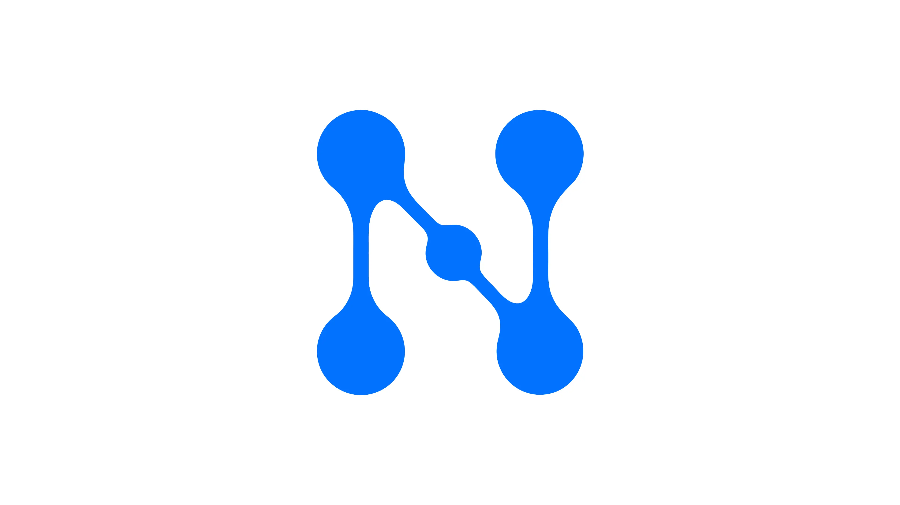

Мессенджер
Исследовал информационную перегрузку в корпоративных мессенджерах: Slack, Teams, Mattermost, Пачка, Telegram. Спроектировал четыре функции и проверил их в немодерируемом тестировании. Работал в команде трёх человек: отвечал за методологию и дизайн.
Смотреть прототип в Figma →
Обзор
Сотрудник получает в среднем 153 сообщения в день. После каждого прерывания требуется 15–23 минуты, чтобы вернуться в задачу. Мессенджеры хорошо доставляют сообщения, но не помогают управлять вниманием.
Открыть обзор →Аудитория
Бэк-офис
Разработчики, дизайнеры, аналитики. Коммуникация для них инструмент, не цель: получить информацию, уточнить, вернуться к работе.
Стрессор: техно-инвазия. Каждое прерывание разрушает фокус, на восстановление 15–23 минуты.
Менеджеры
Тимлиды, PM, руководители среднего звена. Коммуникация и есть основная работа: обсуждения, решения, статусы, согласования.
Стрессор: техно-оверлоад. Критичные сообщения тонут в рутинных, различить их нет инструмента.
Ключевые метрики
| Метрика | Цель | Почему |
|---|---|---|
| Совокупный success rate | > 80% | Исходный 78.8% после первого раунда тестирования |
| Воспринимаемая полезность | > 4.0/5 | Средняя 4.2/5 в тестировании: пользователи говорили «мне это реально нужно» |
| Ф4: создание задачи | > 90% | 91.7% в первом раунде: лучший результат в выборке |
| Ф1: AI-суммаризация | > 85% | 81.3%: проблема обнаруживаемости триггера, не концепции |
| Ф2: статусы и автоответы | > 80% | 70.0%: точка входа требует доработки после тестирования |
| Ф3: поиск файлов | > 80% | 71.4%: affordance фильтров-чипов требует доработки |
Исследование
Три метода последовательно: фокус-группа (8 участников), глубинные интервью (10 респондентов), онлайн-опрос (101 анкета). 8 из 12 гипотез подтверждены.
Открыть исследование →Синтез и приоритизация
Аффинная диаграмма перевела инсайты в тематические кластеры. RICE расставил приоритеты: Ф4=119, Ф1=63, Ф2=47, Ф3=46.
Открыть синтез →JTBD и UJM
Четыре формулировки JTBD и карты пути «как есть» для каждой функции. Два паттерна сквозные: воркэраунды как норма и пиковая боль, невидимая самому пользователю.
Открыть JTBD и UJM →Дизайн-решения
Двухколоночная ИА: сайдбар с разделами Поиск, Треды, Задачи, Активность. Четыре функции спроектированы как система: разные задачи, единая архитектура.
Юзабилити-тестирование
52 немодерируемые сессии через платформу Pathway. Совокупный success rate 78.8%, средняя воспринимаемая полезность 4.2/5. Все четыре концепции подтверждены.
Открыть тестирование →Итерации
Три волны правок по результатам тестирования. Все проблемы на уровне обнаруживаемости, не концепции: affordance фильтров, точка входа в статусы, визуальная иерархия на экране резюме.
Открыть итерации →